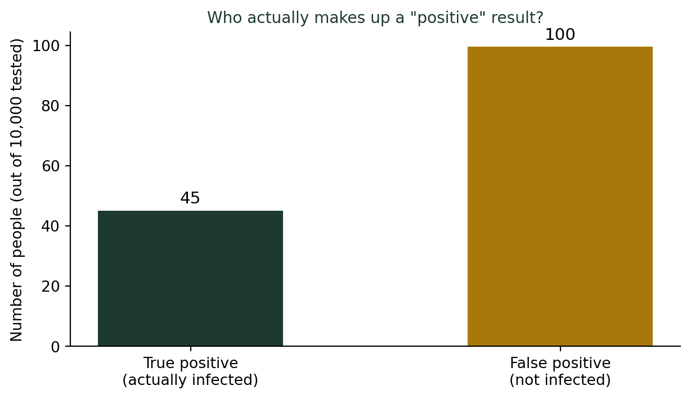
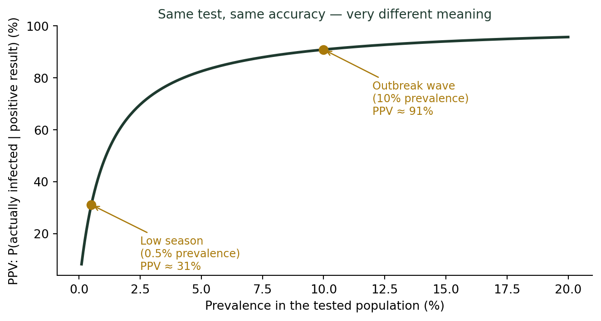

(비율과 백분율의 함정) 특이도 99% 자가검사키트, 양성이면 정말 걸린 걸까?
통계기초
확률
식약처가 승인한 코로나19 자가검사키트는 민감도 90%, 특이도 99% 이상이어야 한다. 이렇게 정확한 검사에서 양성이 나왔는데, 왜 절반도 안 되는 확률로 진짜 감염일 수 있을까?
수업 시간마다 나오는 질문
통계학 개론에서 조건부확률을 다루는 주에는, 나는 항상 같은 상황을 던진다.
“자가검사키트에서 양성이 나왔습니다. 실제로 감염되었을 확률은 몇 %일까요?”
학생들 대부분은 망설임 없이 “거의 100%죠”라고 답한다. 근거도 명확하다. 식약처가 코로나19 자가검사키트를 허가할 때 요구하는 기준은 민감도 90% 이상, 특이도 99% 이상이다. 이 정도면 “거의 정확한 검사” 아닌가?
그런데 실제로 계산해보면, 특정 상황에서는 양성 판정을 받은 사람 중 진짜 감염자가 절반도 안 되는 경우가 나온다. 매년 이 대목에서 강의실은 술렁인다.
“민감도 90%, 특이도 99%”가 뜻하는 것
먼저 두 용어부터 정리하자.
- 민감도(Sensitivity): 실제로 감염된 사람 중에서 검사가 양성으로 맞힌 비율
- 특이도(Specificity): 실제로 감염되지 않은 사람 중에서 검사가 음성으로 맞힌 비율
실제 기준: 식약처 자가검사키트 허가 요건
식품의약품안전처는 코로나19 자가검사키트를 긴급사용승인·허가할 때 임상적 민감도 90% 이상, 특이도 99% 이상을 요구했다. 이는 미국 등 해외 규제기관과 동등하거나 더 엄격한 수준이다.
여기서 학생들이 놓치는 지점이 있다. 특이도 99%는 “감염 안 된 사람 100명 중 99명은 정확히 음성”이라는 뜻이지, 뒤집어 “양성이 나온 사람은 99% 확률로 감염”이라는 뜻이 아니다. 이 둘을 헷갈리는 순간, 착시가 시작된다.
감염자가 적을 때, 숫자로 확인해보자
인구 1만 명 중 실제 감염자가 0.5%(50명)인 시기라고 해보자. 유행이 잦아든 시점이면 흔히 나오는 수준이다. 이 1만 명 전원이 자가검사키트를 쓴다면?
- 감염자 50명 중 민감도 90%가 맞혀서 45명이 양성(진짜 양성), 5명은 놓쳐서 음성(가짜 음성)
- 비감염자 9,950명 중 특이도 99%가 맞혀서 9,851명은 음성이지만, 1%는 틀려서 약 100명이 양성(가짜 양성)
양성 판정을 받은 사람은 총 145명 정도인데, 그중 진짜 감염자는 45명뿐이다. 나머지 100명은 감염되지 않았는데도 양성이 뜬 가짜 양성이다. 즉 “양성인데 진짜로 감염되었을 확률”은
\[\frac{45}{145} \approx 31\%\]
민감도 90%, 특이도 99%짜리 검사인데도, 이 시기에는 양성이 나와도 실제 감염 확률이 3분의 1에 그친다.
이 계산에 이름이 있다: 양성예측률
이 비율을 통계학에서는 양성예측률(PPV, Positive Predictive Value)이라 부른다.
\[\text{PPV} = \frac{\text{민감도} \times \text{유병률}}{\text{민감도} \times \text{유병률} + (1-\text{특이도}) \times (1-\text{유병률})}\]
방금 계산을 이 공식에 그대로 넣으면:
\[\text{PPV} = \frac{0.90 \times 0.005}{0.90 \times 0.005 + 0.01 \times 0.995} = \frac{0.0045}{0.01445} \approx 31\%\]
핵심은 유병률(prevalence), 즉 “검사받는 집단에서 실제로 감염된 사람의 비율”이다. 민감도와 특이도가 고정되어 있어도, 유병률이 낮으면 가짜 양성의 절대 숫자가 진짜 양성을 압도해버린다. 비감염자 집단(9,950명)이 감염자 집단(50명)보다 훨씬 크기 때문에, 특이도가 1%만 틀려도 그 1%가 만들어내는 가짜 양성의 수가 감염자 전체 수를 넘어서는 것이다.
유행이 심할 때는 완전히 달라진다
같은 검사, 같은 민감도·특이도라도 유병률이 높은 시기(유행의 정점, 예를 들어 10%)라면 계산이 딴판이 된다.

유병률 10%일 때 PPV는:
\[\text{PPV} = \frac{0.90 \times 0.10}{0.90 \times 0.10 + 0.01 \times 0.90} = \frac{0.09}{0.099} \approx 91\%\]
같은 검사인데도, 유행이 심한 시기(10%)에는 양성이면 91% 확률로 진짜 감염이지만, 유행이 잠잠한 시기(0.5%)에는 31%로 뚝 떨어진다. 검사의 정확도는 그대로인데, 검사받는 집단이 바뀌면 결과의 의미도 바뀐다.
그래서 자가검사키트 결과는 이렇게 쓴다
이 때문에 방역 당국은 자가검사키트를 “확진 검사”가 아니라 선별용 보조 수단으로 안내했다. 자가검사키트에서 양성이 나오면 PCR 등 정밀검사로 재확인하도록 권고한 것도 같은 이유다. 특히 유행이 잠잠한 시기의 양성 결과는, 검사 자체의 정확도와 별개로 “가짜 양성일 가능성”을 항상 열어둬야 한다.
더 깊이: 베이즈 규칙과 양성예측률
이 계산은 사실 확률론의 핵심 정리인 베이즈 규칙(Bayes’ Rule)을 그대로 적용한 것이다. 강의노트 〈수리 통계 1. 확률 — 베이즈 확률: 특이도와 민감도〉에서는 민감도·특이도·양성예측률·음성예측률의 정의를 표로 정리하고, 이 값들이 베이즈 규칙 \(P(H|D) = \dfrac{P(D|H)P(H)}{P(D)}\)의 어느 항에 대응하는지를 다룬다. 여기서 유병률은 사전확률 \(P(H)\), PPV는 사후확률 \(P(H|D)\)에 해당한다. “검사가 정확하다”는 사실(우도)과 “원래 얼마나 흔한 일인가”라는 사실(사전확률)을 곱해야 진짜 답이 나온다는 것이, 베이즈 규칙이 말하는 전부다.
결론: “정확도 99%”를 볼 때 물어야 할 것
진단 검사 결과를 읽는 법
- “민감도·특이도 몇 %”라는 말만으로는 부족하다. “검사받는 집단에서 실제 비율(유병률)은 얼마인가?”를 함께 물어야 한다.
- 유병률이 낮은 상황(드문 질병, 유행 초기·잠잠기)일수록, 양성 결과 중 가짜 양성의 비중이 커진다.
- 양성 결과가 나오면 정밀검사로 재확인하라는 안내는, 검사가 부실해서가 아니라 이 통계적 구조 때문이다.
- 반대로 유행이 심한 시기에는 같은 검사라도 양성 결과를 훨씬 더 신뢰할 수 있다.
나는 이 수업을 마칠 때마다 학생들에게 같은 말을 한다. “검사가 정확하다”와 “검사 결과가 곧 진실이다”는 다른 말이다. 그 사이를 이어주는 것이 유병률이라는, 눈에 잘 보이지 않는 숫자다.